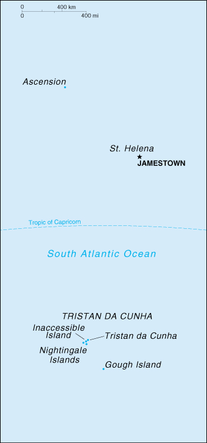

{kind=link}


| Saint Helena |
|
|  | |
| Introduction |
Background: Uninhabited when first discovered by the Portuguese in 1502, the island was garrisoned by the British during the 17th century. It became famous as the place of Napoleon BONAPARTE's exile, from 1815 until his death in 1821.
| Geography |
Location: islands in the South Atlantic Ocean, about mid-way between South America and Africa
Geographic coordinates: 15 56 S, 5 42 W
Map references: Africa
Area:
total:
410 sq km
land:
410 sq km
water:
0 sq km
note:
includes Ascension, Gough Island, Inaccessible Island, Nightingale Island, and Tristan da Cunha Island
Area - comparative: slightly more than two times the size of Washington, DC
Land boundaries: 0 km
Coastline: 60 km
Maritime claims:
exclusive fishing zone:
200 nm
territorial sea:
12 nm
Climate: Saint Helena - tropical; marine; mild, tempered by trade winds; Tristan da Cunha - temperate; marine, mild, tempered by trade winds (tends to be cooler than Saint Helena)
Terrain:
Saint Helena - rugged, volcanic; small scattered plateaus and plains
note:
the other islands of the group have a volcanic origin
Elevation extremes:
lowest point:
Atlantic Ocean 0 m
highest point:
Queen Mary's Peak on Tristan da Cunha 2,060 m
Natural resources: fish
Land use:
arable land:
6%
permanent crops:
0%
permanent pastures:
6%
forests and woodland:
6%
other:
82% (1993 est.)
Irrigated land: NA sq km
Natural hazards: active volcanism on Tristan da Cunha
Environment - current issues: NA
Geography - note: harbors at least 40 species of plants unknown anywhere else in the world; Ascension is a breeding ground for sea turtles and sooty terns
| People |
Population: 7,212 (July 2000 est.)
Age structure:
0-14 years:
19% (male 705; female 691)
15-64 years:
72% (male 2,691; female 2,472)
65 years and over:
9% (male 274; female 379) (2000 est.)
Population growth rate: 0.76% (2000 est.)
Birth rate: 13.73 births/1,000 population (2000 est.)
Death rate: 6.1 deaths/1,000 population (2000 est.)
Net migration rate: 0 migrant(s)/1,000 population (2000 est.)
Sex ratio:
at birth:
1.06 male(s)/female
under 15 years:
1.02 male(s)/female
15-64 years:
1.09 male(s)/female
65 years and over:
0.72 male(s)/female
total population:
1.04 male(s)/female (2000 est.)
Infant mortality rate: 23.23 deaths/1,000 live births (2000 est.)
Life expectancy at birth:
total population:
76.83 years
male:
73.95 years
female:
79.85 years (2000 est.)
Total fertility rate: 1.53 children born/woman (2000 est.)
Nationality:
noun:
Saint Helenian(s)
adjective:
Saint Helenian
Ethnic groups: African descent, white
Religions: Anglican (majority), Baptist, Seventh-Day Adventist, Roman Catholic
Languages: English
Literacy:
definition:
age 20 and over can read and write
total population:
97%
male:
97%
female:
98% (1987 est.)
| Government |
Country name:
conventional long form:
none
conventional short form:
Saint Helena
Data code: SH
Dependency status: overseas territory of the UK
Government type: NA
Capital: Jamestown
Administrative divisions: 1 administrative area and 2 dependencies*; Ascension*, Saint Helena, Tristan da Cunha*
Independence: none (overseas territory of the UK)
National holiday: Celebration of the Birthday of the Queen (second Saturday in June)
Constitution: 1 January 1989
Legal system: NA
Suffrage: NA years of age
Executive branch:
chief of state:
Queen ELIZABETH II (since 6 February 1952)
head of government:
Governor and Commander in Chief David HOLLAMBY (since NA June 1999)
cabinet:
Executive Council consists of the governor, two ex officio officers, and six elected members of the Legislative Council
elections:
none; the monarch is hereditary; governor is appointed by the monarch
Legislative branch:
unicameral Legislative Council (15 seats, including the speaker, 3 ex officio and 12 elected members; members are elected by popular vote to serve four-year terms)
elections:
last held 9 July 1997 (next to be held NA July 2001)
election results:
percent of vote - NA; seats - independents 15
Judicial branch: Supreme Court
Political parties and leaders: none
International organization participation: ICFTU
Diplomatic representation in the US: none (overseas territory of the UK)
Diplomatic representation from the US: none (overseas territory of the UK)
Flag description: blue with the flag of the UK in the upper hoist-side quadrant and the Saint Helenian shield centered on the outer half of the flag; the shield features a rocky coastline and three-masted sailing ship
| Economy |
Economy - overview: The economy depends largely on financial assistance from the UK, which amounted to about $5 million in 1998. The local population earns income from fishing, the raising of livestock, and sales of handicrafts. Because there are few jobs, a large proportion of the work force has left to seek employment overseas.
GDP: purchasing power parity - $13.9 million (FY94/95 est.)
GDP - real growth rate: NA%
GDP - per capita: purchasing power parity - $2,000 (FY94/95 est.)
GDP - composition by sector:
agriculture:
NA%
industry:
NA%
services:
NA%
Population below poverty line: NA%
Household income or consumption by percentage share:
lowest 10%:
NA%
highest 10%:
NA%
Inflation rate (consumer prices): NA%
Labor force:
2,416 (1991 est.)
note:
a large proportion of the work force has left to seek employment overseas
Labor force - by occupation: farmers and fishermen 6%, industry (mainly construction) 48%, services 46% (1987 est.)
Unemployment rate: 18% (1996)
Budget:
revenues:
$11.2 million
expenditures:
$11 million, including capital expenditures of $NA (FY92/93)
Industries: construction, crafts (furniture, lacework, fancy woodwork), fishing
Industrial production growth rate: NA%
Electricity - production: 6 million kWh (1998)
Electricity - production by source:
fossil fuel:
100%
hydro:
0%
nuclear:
0%
other:
0% (1998)
Electricity - consumption: 6 million kWh (1998)
Electricity - exports: 0 kWh (1998)
Electricity - imports: 0 kWh (1998)
Agriculture - products: corn, potatoes, vegetables; timber; fish, crawfish (on Tristan da Cunha)
Exports: $704,000 (f.o.b., 1995)
Exports - commodities: fish (frozen, canned, and salt-dried skipjack, tuna), coffee, handicrafts
Exports - partners: South Africa, UK
Imports: $14.434 million (c.i.f., 1995)
Imports - commodities: food, beverages, tobacco, fuel oils, animal feed, building materials, motor vehicles and parts, machinery and parts
Imports - partners: UK, South Africa
Debt - external: $NA
Economic aid - recipient: $12.6 million (1995); note - $5.3 million from UK (1997)
Currency: 1 Saint Helenian pound = 100 pence
Exchange rates: Saint Helenian pounds per US$1 - 0.6092 (January 2000), 6.180 (1999), 0.6037 (1998), 0.6047 (1997), 0.6403 (1996), 0.6335 (1995); note - the Saint Helenian pound is at par with the British pound
Fiscal year: 1 April - 31 March
| Communications |
Telephones - main lines in use: 2,000 (1994)
Telephones - mobile cellular: 0 (1994)
Telephone system:
domestic:
automatic network; HF radiotelephone from Saint Helena to Ascension, then into worldwide submarine cable and satellite networks
international:
major coaxial submarine cable relay point between South Africa, Portugal, and UK at Ascension; satellite earth stations - 2 Intelsat (Atlantic Ocean)
Radio broadcast stations: AM 1, FM 0, shortwave 0 (1998)
Radios: 3,000 (1997)
Television broadcast stations: 0 (1997)
Televisions: 2,000 (1997)
Internet Service Providers (ISPs): NA
Communications - note: Gough Island has a meteorological station
| Transportation |
Railways: 0 km
Highways:
total:
NA km (Saint Helena 118 km, Ascension NA km, Tristan da Cunha NA km)
paved:
180.7 km (Saint Helena 98 km, Ascension 80 km, Tristan da Cunha 2.70 km)
unpaved:
NA km (Saint Helena 20 km, Ascension NA km, Tristan da Cunha NA km)
Ports and harbors: Georgetown (on Ascension), Jamestown
Merchant marine: none (1999 est.)
Airports: 1 (1999 est.)
Airports - with paved runways:
total:
1
over 3,047 m:
1 (1999 est.)
| Military |
Military - note: defense is the responsibility of the UK
| Transnational Issues |
Disputes - international: none